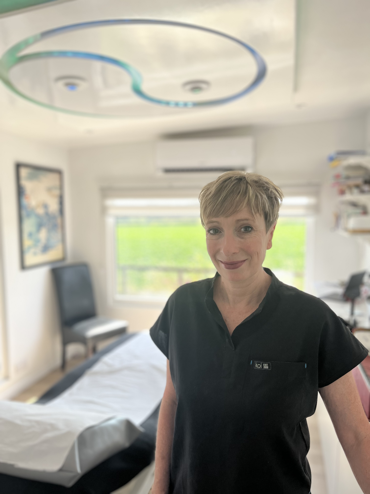

Acupuncture & Herbal Medicine
Two complementary pathways to healing — used individually or together for the most complete therapeutic effect. Both are rooted in Traditional Chinese Medicine and adapted to your unique needs.

Ancient wisdom, modern care
Acupuncture works by stimulating specific points on the body. In Traditional Chinese Medicine, these points are understood to be part of the body's energy pathways (or channels); in modern terms, acupuncture influences the nervous system, shaping how the brain processes pain, stress and other signals.
By stimulating these points, acupuncture can "interrupt" unhelpful patterns in the body — such as hormone regulation, pain responses or stress pathways — and create a useful nudge towards recovery.
In this way, treatment can act as a conduit for change: supporting the body's natural ability to heal, rebalance and settle.
Fine, single-use needles are placed with precision and care. Most people find the experience deeply relaxing — often drifting into a restorative rest. From pain and hormonal health to anxiety and digestive concerns, acupuncture offers a grounded approach to lasting wellbeing.
Acupuncture Treatments
Personalised prescriptions from nature
Chinese herbal medicine can be used as a standalone treatment, or alongside acupuncture to help build on the work you and I do in clinic.
Each formula is chosen for you as an individual, looking at your symptoms, your overall health, and how things change over time. Unlike conventional medicines, which often focus on managing a specific symptom or diagnosis, Chinese herbal medicine takes a broader view — aiming to support the whole person and address root causes alongside the symptoms.
When professionally prescribed, Chinese herbal medicine offers a gentler, more personalised approach than conventional treatments, with formulas regularly adjusted to suit your needs and minimise unwanted effects wherever possible.
Chinese herbal medicine can be used alongside acupuncture to support your treatment between appointments and help build on the work we do in clinic.
About Herbal Medicine